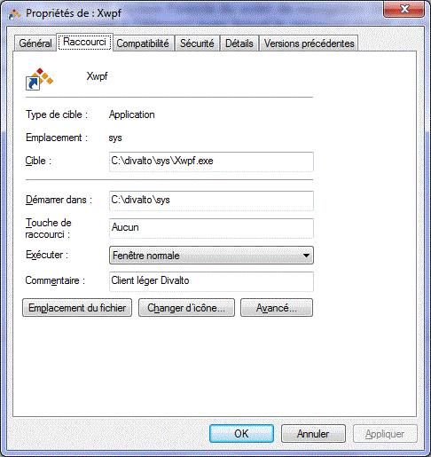

Un raccourci est un lien vers un élément (tel qu’un fichier, un dossier ou un programme) de l'ordinateur. Des raccourcis peuvent être créés et placés à un endroit approprié, par exemple sur le Bureau ou dans la section Favoris du volet de navigation (le volet gauche) d’un dossier, pour pouvoir accéder facilement à l’élément avec lequel le raccourci établit un lien. Les raccourcis se distinguent du fichier d’origine grâce à la flèche qui apparaît sur l’icône.
Le raccourci permettant de lancer une application depuis le client léger Divalto est le suivant (exemple où le dossier Divalto se trouve sur le disque C) :

Raccourci vers l’application en précisant le profil utilisateur
Si l'on est amené à utiliser Divalto dans différents contextes et donc à employer plusieurs profils d'utilisation, il peut être intéressant de créer autant de raccourcis que de profils. Avec l’option "Toujours utiliser ce profil", cela permet d’ouvrir directement la fenêtre de l’application, sans répondre à aucune question préalable, quelque soit le contexte d'exécution.
Exemple :
Un commercial a besoin d'une connexion au réseau local d'entreprise lorsqu'il travaille au sein de sa société et d'une connexion par service Web lorsqu'il est en déplacement. Sur son poste, après avoir défini les profils utilisateur "Entreprise" et "Deplacement", il crée deux raccourcis (par exemple sur son Bureau) qui lui permettront de se connecter automatiquement au serveur d'applications de sa société, en utilisant l'un ou l'autre profil selon son lieu de travail.
Pour ce faire, il faut ajouter au nom de l'exécutable Xwpf.exe l’option –profil suivie du nom du profil.
Exemples :
C:\divalto\sys\Xwpf.exe -profil Entreprise
C:\divalto\sys\Xwpf.exe -profil Deplacement
Paramètres avancés d'un raccourci vers l’application
D'autres paramètres peuvent être ajoutés au raccourci :
-hide
Demande de ne pas afficher la boîte de connexion à Divalto.
-program "programme"
Nom du programme Diva à exécuter.
-userharmony "util"
Code utilisateur Harmony.
-pwharmonyclear "mot_de_passe"
Mot de passe Harmony.
-harmony_param "params"
Passage d'une chaîne de paramètres "utilisateur".
Le programme appelé pourra récupérer le contenu de cette chaîne par la fonction GetEnv ("harmony_param").
Exemple :
-harmony_param "param1=val1;param2=val2"
Vous pouvez faire figurer dans la chaîne des mots clés Windows ou des variables d'environnement locales en les encadrant du caractère %. Ces mots clés ou variables seront automatiquement remplacés par leur valeur respective.
Exemples :
-harmony_param "username=%USERNAME%;domain=%USERDOMAIN%" permettra de récupérer le nom et le domaine de l'utilisateur.
-harmony_param "%X_USER%" permettra de récupérer la valeur de la variable d'environnement X_USER.